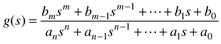
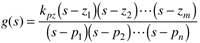
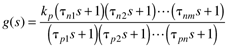
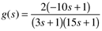
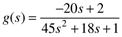
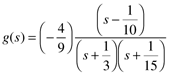
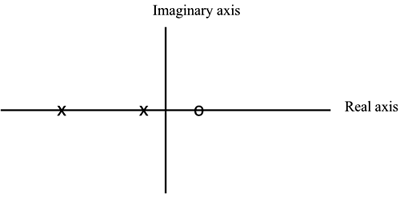
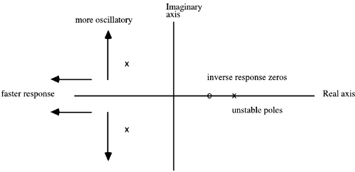

| [ Team LiB ] |
|
3.9 Poles and ZerosThere are a number of different ways to represent process transfer functions. The "polynomial" form is  The values of s that cause the numerator of Equation (3.49) to equal zero are known as the "zeros" of the transfer function. The values of s that cause the denominator of Equation (3.49) to equal zero are known as the "poles" of the transfer function. The "pole-zero" form is  and complex poles (or zeros) must occur in complex conjugate pairs. The "gain-time constant" form is the one that we use most often for control system design.  where tni is a numerator time constant and tpi is a denominator time constant. This form is normally used when the roots (poles) of the denominator polynomial are real. Example 3.7: Comparison of Various Transfer Function FormsConsider a transfer function with the following gain-time constant form  The polynomial form is  The gain-polynomial form is
and the pole-zero form is  The zero is 1/10, and the poles are –1/3 and –1/15. Notice that the zero for Example 3.7 is positive. A positive zero is called a right-half-plane (RHP) zero, because it appears in the right half of the complex plane (with real and imaginary axes). RHP zeros have a characteristic inverse response, as shown in Figure 3-11 for tn = -10 (which corresponds to a zero of +0.1). Also notice that the poles are negative (left-half-plane), indicating a stable process. RHP (positive) poles are unstable. Recall that complex poles will yield an oscillatory response. A pole-zero plot of the transfer function in Example 3.7 is shown in Figure 3-13 [the pole locations are (-1/3,0) and (-1/15,0) and the zero location is (1/10,0), with the coordinates (real,imaginary)]. For this system, there is no imaginary component and the poles and zeros lie on the real axis. Figure 3-13. Pole-zero location plot for Example 3.7 (x, poles; o, zero). As poles move further to the left they yield a faster response, and increasing the magnitude of the imaginary portion makes the response more oscillatory. This behavior is summarized in Figure 3-14. Recall also that a process with a pole at the origin (and none in the RHP) is known as an integrating system; that is, the system never settles to a steady state when a step input change is made. Figure 3-14. Effect of pole-zero location on dynamic behavior (x, poles; o, zero). As poles become more negative, the response is faster. As the imaginary/real ratio increases, the response becomes more oscillatory. Multiple RHP zeros cause multiple "changes in direction"; for example, with two RHP zeros, the step response, initially going in one direction, switches direction, then switches back to the initial direction. |
| [ Team LiB ] |
|